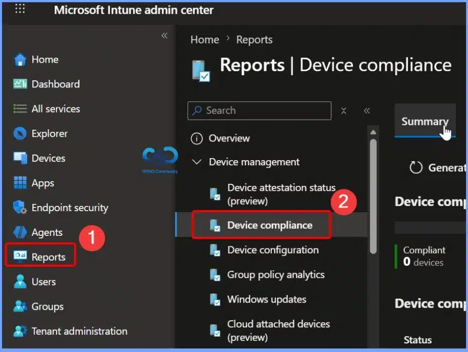

Takeaways
- Tracks compliance trends for managed devices over the last 30 days.
- Monitors compliance status changes over time to identify patterns and fluctuations.
- Helps detect compliance issues early before they impact security or operations.
- Measures the effectiveness of compliance policies and remediation efforts.
- Supports proactive device management by highlighting changes in compliance trends.
Monitor Device Compliance Trends and Track Compliance Changes Over Time in Microsoft Intune! The Device Compliance Trend report in the Microsoft Intune admin center helps IT admins to monitor device compliance over time. It provides aggregated, near-real-time data that highlights long-term compliance trends across your organisation. By analysing these trends, IT admins can identify recurring compliance issues, detect anomalies, measure the impact of policy changes, and make informed decisions to improve security, optimise compliance strategies, and plan future investments.
Table of Content
Monitor Device Compliance Trends and Track Compliance Changes Over Time in Microsoft Intune
Device compliance is the process of verifying whether a device meets the organisation’s security and compliance policies configured in Microsoft Intune. Sign in to the Microsoft intune admin center. Select Reports > Device compliance.

Access the Device Compliance Trends Report in Microsoft Intune
To view the Device Compliance Trends report, sign in to the Microsoft Intune admin center and navigate to Reports > Device compliance > Reports > Device compliance trends. This report provides a 30-day overview of device compliance status, helping administrators monitor how compliance changes over time.
Device Compliance Trends
By reviewing these trends, IT teams can identify recurring compliance issues, evaluate the impact of compliance policies, and take proactive steps to improve the overall security and compliance posture of managed devices.
Filter Devices by Compliance Status
Use the Compliance status filter to narrow the report based on specific device compliance states. You can choose All, Compliant, Not compliant, In grace period, Managed by ConfigMgr, or Not evaluated to display only the devices that match the selected status.
| Compliance status |
|---|
| All Compliant In grace period Managed by ConfigMgr Not compliant Not evaluated |
Filter the Device Compliance Trends Report by Operating System
Use the OS filter to view device compliance trends for specific operating systems in Microsoft Intune. You can filter the report by platforms such as Android (AOSP), Android (Device Administrator), Android (Fully Managed/Dedicated), Android (Work Profile), iOS/iPadOS, macOS, Windows, and other supported operating systems.
View Device Compliance Status Summary
The Device Compliance Trends report provides a summary of the latest device compliance status at the bottom of the chart. It displays the current number of Compliant, Not compliant, Not evaluated, Managed by Configuration Manager, and In grace period devices.
Refresh the Device Compliance Trends Report
Use the Refresh option to update the Device Compliance Trends report with the latest available data from Microsoft Intune. Refreshing the report ensures that any recent changes to device compliance status, policy evaluations, or newly enrolled devices are reflected in the report.
View Detailed Compliance Data by Hovering Over the Trend Chart
Hover over any point in the Device Compliance Trends chart to view the compliance status for a specific date or time. The tooltip displays the number of Compliant, Not compliant, Not evaluated, Managed by Configuration Manager, and In grace period devices for that point in time.
View Compliance Trends for Compliant Devices
Select Compliant from the Compliance status filter to display the 30-day compliance trend for only compliant devices. The report updates the chart and summary to show the number of devices that currently meet all assigned compliance policies.
View Compliance Trends for Noncompliant Devices
Select Not compliant from the Compliance status filter to view the 30-day trend for devices that do not meet the assigned compliance policies. The report updates the chart and summary to display only noncompliant devices, helping administrators identify compliance issues, track changes over time, and prioritise remediation efforts to improve the organisation’s overall compliance posture.
Resources
Need Further Assistance or Have Technical Questions?
Join the LinkedIn Page and Telegram group to get the latest step-by-step guides and news updates. Join our Meetup Page to participate in User group meetings. Also, join the WhatsApp Community and the Whatsapp channel to get the latest news on Microsoft Technologies. We are there on Reddit as well.
Author
Anoop C Nair is a Workplace Technology solution architect with 25+ years of experience. Microsoft Certified Trainer. Microsoft MVP from 2015 onwards for consecutive 11+ years! He is a blogger, Speaker, and Founder of HTMD Community and HTMD Conference. His main focus is on Device Management technologies like Intune, Windows, and Cloud PC. He writes about technologies like Intune, SCCM, Windows, Cloud PC, Entra, and Microsoft Security.